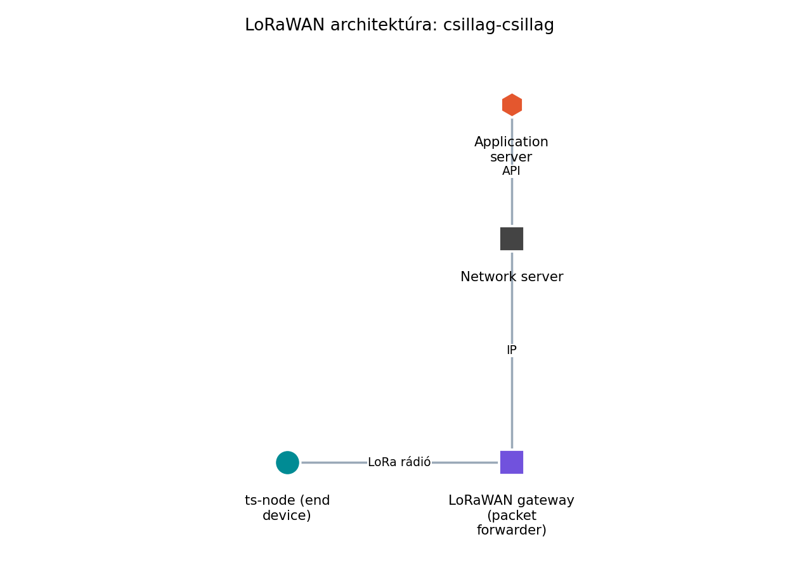

A TerraSense alapértelmezett architektúrájában a ts-node
szenzorcsomópont valós hardveren BLE GATT-on, a szimulációs laborban
UDP-n küldi a mérési adatokat a ts-gw gatewaynek, amely
aztán MQTT-n továbbítja a backend felé. Ez a modell akkor működik jól,
ha a csomópont a ts-gw BLE-hatótávolságán (néhány tíz
méter) belül van.
Más a helyzet, ha a monitorozott üvegház egy távoli, infrastruktúra nélküli területen van, vagy ha egyetlen gatewaynek több, egymástól több száz méterre lévő csomópontot kellene kiszolgálnia. Ilyenkor a rövid hatótávú rádiók (BLE, Wi‑Fi) nem elegendők, a cellás kapcsolat pedig túl drága és energiaéhes lenne egy elemes szenzorhoz. A LoRaWAN ezt a rést tölti be: kilométeres hatótávot ad alacsony adatsebességgel és nagyon kis energiafogyasztással, cserébe szigorú adásgyakorisági korlátokkal. Ebben az alfejezetben megismerjük a LoRaWAN architektúráját, eszközosztályait, aktiválási módjait, és kiszámítjuk, milyen gyakran küldhet egy eszköz a duty cycle szabályok betartásával.
Definíció. A LoRaWAN (Long Range Wide Area Network) egy LPWAN (Low Power Wide Area Network) hálózati protokoll, amely a LoRa modulációt használja. A hálózat négy fő elemből áll:
ts-node.DevAddr, frame
counterek, MIC-ellenőrzés, duplikátumszűrés, adaptív adatsebesség és
downlink-ütemezés. A hálózati munkamenetkulcsokkal (1.1-ben
FNwkSIntKey, SNwkSIntKey,
NwkSEncKey; 1.0.x-ben egyetlen NwkSKey) a
hálózati réteg integritását és a hálózati mezőket védi; az application
payload visszafejtése nem a feladata.AppSKey kulccsal fejti vissza,
dekódolja az alkalmazás sémáját, továbbítja az alkalmazás felé, és
fogadja az alkalmazás parancsait. Gyakran MQTT-n vagy HTTP-n kommunikál
a backenddel.NwkKey, AppKey) tárolja, és a join során
származtatja, majd szétosztja a munkamenetkulcsokat a network server és
az application server felé. Ezzel a hálózati és az alkalmazási kulcs
szétválasztható.A LoRaWAN rádiós oldala csillag topológiájú: minden end device közvetlenül egy vagy több gatewayhez küld, az eszközök egymással nem kommunikálnak. A gatewayek IP-hálózaton (Ethernet, Wi‑Fi, cellás) csatlakoznak a network serverhez, ami egy második, hálózati csillagot alkot. Ezt a kétszintű felépítést nevezzük csillag-csillag topológiának.

Az ábra azt mutatja, hogy a ts-node LoRa rádión küld egy
LoRaWAN-gatewaynek (ez nem a ts-gw, hanem csomagtovábbító),
amely IP-n továbbít a network servernek, onnan pedig az application
serverhez jut az adat; az application server után az adat MQTT-n jut a
ts-backend-hez. A gateway nem értelmezi és nem fejti vissza
az application payloadot, csak a rádiókereteket és a vételi metaadatokat
továbbítja. A MIC-et és a hálózati mezőket a network server ellenőrzi a
hálózati munkamenetkulcsokkal, az application payloadot pedig az
application server fejti vissza AppSKey-jel. A LoRaWAN
1.1-ben a join server osztja szét a két kulcsot, ezért a network server
nem kapja meg automatikusan az application payload visszafejtéséhez
szükséges kulcsot. A LoRaWAN 1.0.x-ben a kulcsszármaztatás egyszerűbb,
és a network server jellemzően mindkét munkamenetkulcsot ismeri;
ilyenkor a két szerep szétválasztása elsősorban üzemeltetési és
szerződéses, nem kriptográfiai garancia.
Definíció. A LoRaWAN három eszközosztályt határoz meg, amelyek abban különböznek, hogy az eszköz mikor tud downlink üzenetet fogadni:
Az alábbi ábra a három osztály fogadási lehetőségeit egy közös idővonalon mutatja egy 10 perces uplink-periódus mellett. Ha a parancs a 30. másodpercben érkezik a backendbe, a Class C eszköz szinte azonnal, a Class B a következő ping slotban, a Class A csak a következő uplink utáni RX1 ablakban kaphatja meg; az alsó sáv a 61,7 ms-os adás utáni duty-cycle várakozást jelzi.
A TerraSense elemes szenzorcsomópontja számára a Class
A a természetes választás, mert a mérési ciklus (10 perc az Energiamodell és az elemélettartam kiszámítása
alapján: ott a számított élettartam 10 perces periódusnál 14,1 hónap, 5
percesnél csak 10,8 hónap, vagyis az 5 perces periódus nem teljesítené a
12 hónapos követelményt) ritkán igényel azonnali parancsot. A szelep
vezérléséhez a parancs a következő uplink utáni RX1 vagy RX2 ablakban
érkezhet meg, de ez csak a következő fogadási
lehetőség, nem kézbesítési garancia: ha az uplink vagy a
downlink elveszik, a parancs nem érkezik meg. Ezért a parancsnak TTL-t
(lejárati időt) kell adni, az application server a TTL-en belül
újrapróbálkozhat, és a szelep helyi biztonsági logikája (a Aktuátorok: biztonságos vezérlés és visszajelzés
alfejezet max_on_time korlátja) a parancs hiányában is zár.
A gyakorlati késleltetés így a következő uplinkig tartó várakozás plusz
az esetleges újrapróbálkozások ideje, nem pedig garantáltan legfeljebb
egy periódus.
Definíció. A LoRaWAN kétféle aktiválási módot kínál:
DevAddr azonosítóban és a munkamenetkulcsokban. A LoRaWAN
1.1-ben a join server a gyökérkulcsokból (NwkKey,
AppKey) származtatja a hálózati munkamenetkulcsokat
(1.1-ben FNwkSIntKey, SNwkSIntKey,
NwkSEncKey; 1.0.x-ben egyetlen NwkSKey) és az
alkalmazási AppSKey-t, és külön adja át a network
servernek, illetve az application servernek. Az eszköz az application
payloadot AppSKey-jel titkosítja, a MIC számításához pedig
a hálózati kulcsot használja. Az OTAA lehetővé teszi a kulcsok
rotációját és a biztonságos újracsatlakozást.DevAddr és a munkamenetkulcsok előre be vannak égetve az
eszközbe, így nincs join eljárás; az eszköz azonnal küldhet. Cserébe a
kulcsok statikusak, a network server jellemzően mindkét kulcsot ismeri,
és a frame counter elvesztése biztonsági kockázatot jelent.A TerraSense esetében az OTAA javasolt, mert a join serverrel való időszakos újracsatlakozás lehetővé teszi a kulcsfrissítést és a biztonságos flottakezelést. Az ABP csak olyan zárt, felügyelt környezetben elfogadható, ahol a frame counter perzisztens tárolása garantált, és a network server és az application server szerepe nem válik szét kriptográfiailag.
Definíció. A LoRa modulációban a spreading factor (SF) azt adja meg, hogy egy szimbólum hány chipből áll: chipből. A chip a chirp moduláció elemi időegysége, a szimbólum pedig bit információt hordoz; a kódolási ráta, a header és a CRC miatt a tényleges adatbitráta ennél kisebb. A szimbólumidő , tehát az SF növelése exponenciálisan növeli a szimbólumidőt: 125 kHz-en SF7 esetén ms, SF12 esetén ms, ami ugyanannyi szimbólumnál 32-szer hosszabb adást jelent. Nagyobb SF nagyobb érzékenységet és hatótávot ad, de kisebb adatsebességet és hosszabb rádióidőt (time on air) eredményez. A duty cycle (adáskihasználtság) azt a szabályozási korlátot jelenti, amely megadja, hogy egy adott frekvenciasávban vagy alsávban az eszköz az idő mekkora hányadában adhat.
A LoRaWAN régiós szabályozásai – például az EU868 sávban az ETSI előírásai – jellemzően 1% vagy annál kisebb duty cycle-t írnak elő egyes alsávokra. Ez az érték ellenőrzési igényt hordoz: a pontos számok a régiótól, az alsávtól és a szabályozás aktuális verziójától függenek. A következő számításban ezért illusztratív értéket használunk.
A rádióidő nem lineárisan arányos az SF-fel: a szimbólumidő -fel nő, a payload szimbólumszáma pedig a payload méretétől, az SF-től és a kódolási rátától függ. A pontos LoRa idő a levegőben képletet a Rádiós technológiák összevetése: hatótáv, energia, sávszélesség, költség alfejezet mutatta be. Ha egy eszköz rádióideje , és az adott szabályozott alsávban megengedett duty cycle , akkor a minimális periódus:
Ebből a maximális üzenetgyakoriság:
A gyakorlatban az eszköz több csatornát is használhat, de az ugyanabba a szabályozott alsávba eső csatornák adásideje összeadódik; a csatornaváltás nem nullázza a felhasznált keretet. Az EU868 alapértelmezett 868,1/868,3/868,5 MHz-es csatornái például jellemzően ugyanabba a 868,0–868,6 MHz-es alsávba esnek, ezért a három csatorna együttes adásidejére kell a korlátot betartani. A különböző alsávok külön kerettel rendelkeznek, és a hálózati szerver fair-use szabálya ettől független, további korlát lehet.
A LoRaWAN akkor a legjobb választás, ha:
Nem jó választás, ha:
A Rádiós technológiák összevetése: hatótáv,
energia, sávszélesség, költség alfejezetben részletesen
összehasonlítottuk a LoRaWAN-t a BLE, Wi‑Fi és cellás megoldásokkal. A
TerraSense alapértelmezett laborhálózatában a rövid hatótávú BLE/UDP
megoldást használjuk, de a LoRaWAN-t alternatív uplinkként tartjuk
nyilván azokra a telephelyekre, ahol a ts-gw nem
telepíthető a csomópont közelébe.
Továbbvitt eredmény. A LoRaWAN mint alternatív
uplink döntését a TerraSense-ben a következőképpen rögzítjük: ha egy
telephelyen nincs helyi ts-gw, a ts-node
LoRaWAN Class A végberendezésként, OTAA aktiválással csatlakozik egy
hálózati szerverhez. Az adat az application serveren keresztül
MQTT-topicra kerül, és onnan a meglévő ts-backend ingest
útvonalat használja. Ezt a lehetőséget az A gateway
szerepe: híd, puffer, biztonsági határ és a Záróprojekt: a teljes TerraSense rendszer összeállítása
és átvétele alfejezetek használják fel.
Az alábbi táblázat összefoglalja a LoRaWAN osztályok és aktiválási módok közötti választást.
| Szempont | Class A | Class B | Class C | OTAA | ABP |
|---|---|---|---|---|---|
| Downlink késleltetés | A következő uplink ablakáig (nagy, nem garancia) | Ütemezett rések (közepes) | Azonnali (kicsi) | Első csatlakozáskor join szükséges | Nincs join, azonnal küldhet |
| Energiafogyasztás | Legalacsonyabb | Közepes | Magas | Join alatt kicsit több | Nincs join többlet |
| Tipikus alkalmazás | Elemes szenzor | Elemes eszköz, időzített parancsok | Hálózati táplálású aktuátor | Biztonságos, skálázható flotta | Zárt, egyszerű hálózat |
| Biztonság | Jó | Jó | Jó | Kulcsrotáció lehetséges | Statikus kulcsok, frame counter kockázat |
Tegyük fel, hogy a TerraSense egyik távoli üvegházában a
ts-node LoRaWAN Class A eszközként működik az EU868 sávban.
Az eszköz SF7 spreading faktort használ 125 kHz sávszélességgel, a
payload mérete 10 bájt. A 10 bájt alkalmazásadat a 13 B
LoRaWAN-fejléccel 23 B PHY payload; a Rádiós
technológiák összevetése: hatótáv, energia, sávszélesség, költség
alfejezet képletével (CR 4/5, 8 preamble, CRC, explicit header)
,
így a rádióidő
ms. A régiós szabályozás az adott szabályozott alsávra – például a
868,0–868,6 MHz-es alsávra –
(1%) duty cycle-t ír elő (ellenőrizendő az aktuális ETSI
szabályozásban).
A minimális periódus az alsávban összesített adásidőre:
A maximális üzenetgyakoriság:
Ez azt jelenti, hogy az eszköz az adott alsávban összesen legfeljebb 61,7 ms-ot adhat 6,17 másodpercenként, ami 61,7 ms-os uplink esetén átlagosan 6,17 másodperces küldési periódusnak felel meg. Ez a keret a csatornaváltással nem növelhető, ha a csatornák ugyanabba az alsávba esnek. A TerraSense 10 perces mérési ciklusa ( s) ennél két nagyságrenddel ritkább: egy 61,7 ms-os uplink a 600 s-os periódus kb. 0,010%-át használja, tehát a duty cycle korlát nem szűk keresztmetszet ebben az alkalmazásban.
Fontos megjegyezni, hogy a duty cycle az alsávra vonatkozik, nem az egyes csatornákra és nem az eszközre. Az ugyanabba az alsávba eső csatornák adásideje összeadódik, ezért a véletlenszerű csatornaváltás nem nullázza a felhasznált keretet. A különböző alsávok külön korláttal rendelkeznek, és a hálózati szerver fair-use szabálya (például egy közösségi hálózat napi adásidő-kerete) ettől független, további korlát lehet. A tervezés során a legszigorúbb érintett alsávra és a szerver fair-use szabályára is ellenőrizni kell a rádióidőt.
A duty cycle betartását az eszköz MAC-rétege végzi (a stack a következő adást késlelteti vagy hibával elutasítja, ha a keret elfogyott). A The Things Stack vagy más LoRaWAN hálózati szerver konzolján a frame-ek időbélyege és SF-je alapján utólag ellenőrizhető, hogy az eszköz adásai megfelelnek-e a régiós szabályoknak. A gatewayek is jelentik a vett jel erősségét (RSSI) és a jel-zaj viszonyt (SNR), ami a hatótáv és a spreading factor beállításának ellenőrzésére használható.
| Hibatünet | Lehetséges ok | Javítás |
|---|---|---|
Az eszköz a küldést elhalasztja, vagy a stack duty-cycle hibát ad
(pl. -EAGAIN, „duty cycle restricted”) |
A keret elfogyott az alsávban | Növeljük a periódust, csökkentsük a payloadot vagy az SF-et |
| Az eszköz nem csatlakozik OTAA-val | Hibás AppKey vagy JoinEUI | Ellenőrizzük a regisztrált eszközazonosítókat és kulcsokat a network serverben |
| ABP eszköz újraindítás után nem működik | A frame counter nem lett perzisztensen mentve | Tároljuk a frame countert nem felejtő memóriában, vagy váltsunk OTAA-ra |
| Nagy SF mellett is rossz a hatótáv | Antenna probléma, árnyékolás, rossz gateway-pozíció | Ellenőrizzük az antennát, helyezzük magasabbra a gatewayt |
ABP használata frame counter mentése nélkül. Ha az eszköz újraindul és a frame counter lenullázódik, a network server ismétlésnek vagy visszajátszásnak érzékeli a frame-eket, és elutasítja azokat. A frame countert nem felejtő memóriában kell tárolni, vagy egyszerűbb OTAA-t használni, ahol a join új kulcsokat generál.
Class A eszköznél azonnali downlink elvárása. Sok fejlesztő azt feltételezi, hogy a parancs azonnal eljut az eszközhöz, mint egy TCP-kapcsolatnál. A Class A eszköz csak az uplink utáni rövid RX1/RX2 ablakban hallgat, ezért a parancs legkorábban a következő uplink után érkezhet meg, és ez csak fogadási lehetőség, nem kézbesítési garancia. Uplink- vagy downlinkvesztés esetén a parancs a következő periódusban próbálható újra, ezért TTL-t, újrapróbálkozást és helyi biztonsági zárást kell tervezni. Ha másodperces garanciájú vezérlés kell, Class C vagy más technológia szükséges.
A duty cycle figyelmen kívül hagyása. A LoRaWAN sávok szigorú szabályozás alatt állnak; a túlzott adáskihasználtság jogi következményekkel járhat, és a fair-use szabályú hálózatok korlátozhatják az eszközt. Az ugyanabba a szabályozott alsávba eső csatornák adásideje összeadódik, ezért a csatornaváltás nem ad több keretet. A gyakori adatküldés igénye esetén növelni kell a periódust, csökkenteni kell a rádióidőt, vagy más technológiát kell választani.
A spreading factor növelése mindig javítja a rendszert. Bár a nagyobb SF nagyobb hatótávot ad, a rádióidő is nő, ami növeli az energiafogyasztást és csökkenti a hálózati kapacitást. A cél a lehető legkisebb SF, amely még megbízható kapcsolatot ad.
Magyarázza el, miért nevezzük a LoRaWAN-t csillag-csillag topológiájúnak, és mi a különbség a network server és az application server szerepe között.
Egy LoRaWAN eszköz az EU868 sávban SF7, 125 kHz beállítással 20 bájt payloadot küld. A rádióidő a Rádiós technológiák összevetése: hatótáv, energia, sávszélesség, költség alfejezet 2. feladata szerint ms. A duty cycle korlát . Számítsa ki a minimális periódust és a maximális üzenetgyakoriságot az adott szabályozott alsávra összesítve, és magyarázza el, miért nem növeli a keretet a csatornaváltás, ha a csatornák ugyanabba az alsávba esnek.
A TerraSense távoli üvegházában a ts-node LoRaWAN-t
használ, és a szelepet is vezérelnie kell. Válasszon eszközosztályt
(Class A/B/C) és aktiválási módot (OTAA/ABP), és indokolja a döntést.
Térjen ki arra, hogyan jut el a szelepnyitási parancs az eszközhöz.
Egy ABP-vel aktivált LoRaWAN eszköz működik, de áramszünet után újraindul, és ezután a hálózati szerver nem fogadja az uplinkjeit. Mi lehet az ok, és hogyan javítható?
A csillag-csillag topológia azt jelenti, hogy az end device-ok rádiós
csillagban kapcsolódnak a gatewayekhez (minden eszköz közvetlenül a
gatewayhez, nem egymáshoz), a gatewayek pedig IP-hálózaton egy másik
csillagban a network serverhez. A network server a
LoRaWAN hálózati rétegét kezeli: munkamenet-állapot,
DevAddr, frame counterek, MIC-ellenőrzés, duplikátumszűrés,
adaptív adatsebesség és downlink-ütemezés. A hálózati
munkamenetkulcsokkal (1.1-ben FNwkSIntKey,
SNwkSIntKey, NwkSEncKey) a hálózati réteg
integritását és a hálózati mezőket védi, de az application payloadot nem
neki kell visszafejtenie. Az application server az
application payloadot az AppSKey kulccsal fejti vissza,
dekódolja az alkalmazás sémáját, továbbítja az alkalmazásnak, és fogadja
az alkalmazás parancsait. A LoRaWAN 1.1-ben a join
server a gyökérkulcsokból származtatja és külön osztja szét a
két munkamenetkulcsot, ezért a network server nem kapja meg
automatikusan az application payload kulcsát. A LoRaWAN 1.0.x-ben a
kulcsszármaztatás egyszerűbb, és a network server jellemzően mindkét
kulcsot ismeri; ilyenkor a hálózati és alkalmazási szerep szétválasztása
üzemeltetési és szerződéses, nem kriptográfiai garancia. A MIC az
integritást védi, az AppSKey pedig az alkalmazási adat
bizalmasságát; a kettő külön kulcson és külön szerepkörön alapul.
A minimális periódus:
A maximális üzenetgyakoriság:
Tehát az eszköz az adott alsávban összesítve legalább 7,19 másodpercenként küldhet, azaz legfeljebb kb. 0,139 üzenetet másodpercenként. Ha a három alapértelmezett csatorna ugyanabba az alsávba esik, a csatornák közötti váltás nem növeli a keretet: a 71,9 ms-os adások együttes idejére kell a 7,19 másodperces periódust betartani.
A ts-node elemes szenzorcsomópont, ezért az
energiafogyasztás kritikus. A szelep vezérlése nem igényel azonnali,
másodpercnél pontosabb reakciót, ezért a Class A
osztály elegendő: a parancs legkorábban a következő uplink utáni RX1
vagy RX2 ablakban érkezhet meg, ami a 10 perces ciklusnál legjobb
esetben is akár 10 perces várakozást jelent, kézbesítési garancia
nélkül. Ez azonban csak a következő fogadási lehetőség, nem kézbesítési
garancia; elveszett uplink vagy downlink esetén a parancs nem érkezik
meg. Ezért a parancsnak TTL-t kell adni, az application server a TTL-en
belül újrapróbálkozhat, a szelep helyi max_on_time logikája
pedig a parancs hiányában is zár. Aktiválási módként
OTAA-t választunk, mert a join serverrel való
újracsatlakozás kulcsrotációt és egyszerűbb flottakezelést tesz
lehetővé. Ha később mégis gyorsabb downlink kellene, át lehet térni
Class B-re az ütemezett ping résekkel, de az energiafogyasztás
növekedésével számolni kell.
Az ok nagy valószínűséggel az, hogy a frame counter
(FCntUp) nem lett perzisztensen tárolva, és az újraindulás
után az eszköz nulláról kezdi a sorszámozást. A network server ezt
visszajátszásnak vagy duplikátumnak érzékeli, és elutasítja a
frame-eket. A javítás: a frame countert nem felejtő memóriában (például
flashben) kell tárolni, és újraindulás után onnan kell folytatni. Hosszú
távon jobb megoldás az OTAA-ra való áttérés, mert a join eljárás új
kulcsokat és friss frame countereket generál.
A LoRaWAN egy LPWAN protokoll, amely csillag-csillag topológiában
nagy hatótávot és alacsony energiafogyasztást biztosít. Az end device-ok
rádiós csillagban gatewayekhez kapcsolódnak, a gatewayek IP-n a network
serverhez; a network server a hálózati réteget (munkamenet, frame
counter, MIC, downlink-ütemezés) kezeli, az application server pedig az
AppSKey-jel visszafejtett application payloadot dolgozza
fel. A LoRaWAN 1.1-ben a join server osztja szét a hálózati és
alkalmazási munkamenetkulcsot; 1.0.x-ben a network server jellemzően
mindkét kulcsot ismeri. A három eszközosztály (A, B, C) a
downlink-ablakok gyakoriságában tér el; a TerraSense elemes
csomópontjához a Class A illik. A Class A csak a következő uplink utáni
RX1/RX2 ablakban tud fogadni; ez a következő fogadási lehetőség, nem
kézbesítési garancia. A tényleges késleltetés a következő uplinkig tartó
várakozás plusz az esetleges újrapróbálkozások ideje, ezért TTL,
újrapróbálkozás és helyi biztonsági zárás kell. Az OTAA aktiválás
biztonságosabb, mint az ABP, mert lehetővé teszi a kulcsrotációt. A
spreading factor a szimbólumonkénti
chipet és a
szimbólumidőt határozza meg, ezért a rádióidő az SF-fel exponenciálisan
nő. A duty cycle szabályozási korlátot ad az adásgyakoriságra:
,
és az ugyanabba a szabályozott alsávba eső csatornák adásideje
összeadódik. A példában 61,7 ms rádióidő és 1% alsáv-duty-cycle mellett
a minimális periódus kb. 6,17 s, ami bőven lehetővé teszi a TerraSense
10 perces ciklusát. Továbbvitt eredmény: a LoRaWAN-t a
TerraSense-ben alternatív uplinkként kezeljük: a ts-node
Class A eszközként OTAA-val csatlakozik, az adat MQTT-n át a
ts-backend-be jut; ezt az A gateway
szerepe: híd, puffer, biztonsági határ és a Záróprojekt: a teljes TerraSense rendszer összeállítása
és átvétele alfejezetek használják.
A LoRaWAN protokoll alapfogalmai stabil tudás; a hivatalos
specifikációt a LoRa Alliance adja ki (LoRaWAN Specification). A fejezet
a LoRaWAN 1.1 szerepkiosztását követi: a join server a gyökérkulcsokból
származtatja a hálózati munkamenetkulcsokat (FNwkSIntKey,
SNwkSIntKey, NwkSEncKey; az 1.0.x-ben ezek
helyett egyetlen NwkSKey van) és az AppSKey-t,
a network server a hálózati réteget és a MIC-et kezeli, az application
server az AppSKey-jel fejti vissza az application
payloadot. A LoRaWAN 1.0.x eltér: ott a network server jellemzően
mindkét kulcsot ismeri, ezért a két szerep kriptográfiai szétválasztása
nem garantált; ezt a szöveg külön jelzi. A rádióidő pontos számítása a
LoRa moduláció paramétereitől (SF, sávszélesség, payload, coding rate,
header, CRC) függ, ezért a példában a 61,7 ms-os érték a Rádiós technológiák összevetése: hatótáv, energia,
sávszélesség, költség alfejezet képletével számított, a laborban nem
mért. A duty cycle régiós értékei – például az EU868 868,0–868,6 MHz-es
alsávjára vonatkozó 1% – az aktuális ETSI szabályozásból (EN 300 220
sorozat) ellenőrizendők; a pontos korlátok alsávonként, országonként és
a szabályozás verziója szerint eltérhetnek, és a hálózati szerver
fair-use szabálya külön korlát. A The Things Stack vagy más LoRaWAN
hálózati szerver naplózási és konfigurációs funkcióinak nevei szintén
ellenőrzést igényelnek. A fejezet számításai statikus ellenőrzéssel
készültek; éles LoRaWAN-adás vagy hálózati szerveres mérés nem
történt.